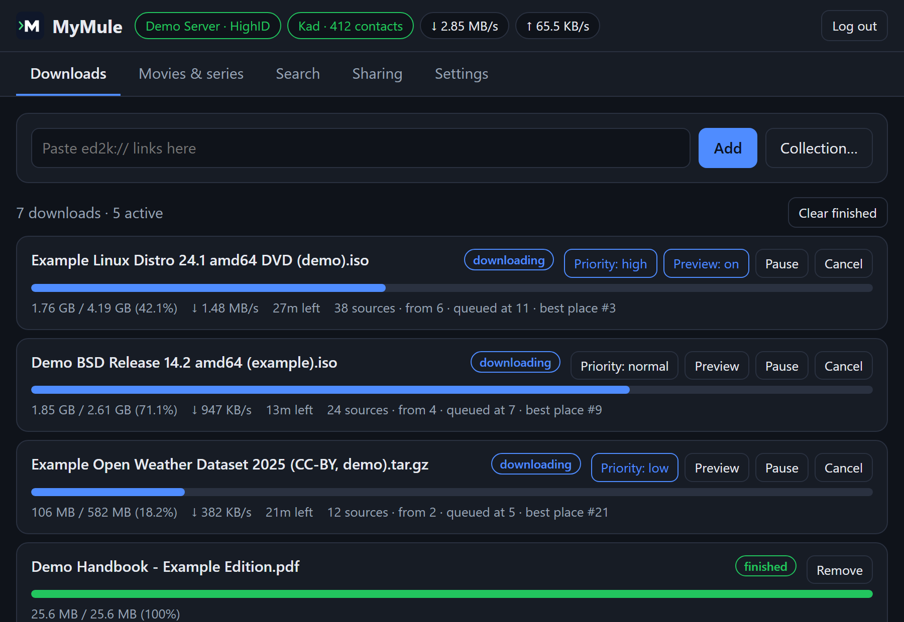

MyMule
Un client eMule moderno per il tuo server o NAS. Un piccolo programma per le reti eD2K e Kad, gestito dal browser, dal telefono o dal terminale.

Perché MyMule
Un solo file, nient’altro
Un unico programma senza dipendenze: niente demoni separati, server web, Python o Node da configurare. Per Windows, Linux, macOS, FreeBSD, schede ARM e NAS, con circa 15 MB di RAM.
Un vero client eMule
eD2K e Kad, crediti, AICH, scambio di fonti, offuscamento e HighID: parla con eMule e aMule come uno di loro.
Fatto per funzionare da solo
Funziona come servizio, riprende dopo un arresto o un riavvio, controlla tutto ciò che inviano gli altri ed è sicuro di serie.
Tutto dal browser
Un’interfaccia web integrata che funziona sul telefono e si installa come app, più una riga di comando per il terminale.
Cosa fa
Scaricare e condividere su eD2K e Kad
- Ricerche sul server connesso o su tutti i server conosciuti insieme, e su Kad.
- Kad, la rete senza server: ricerche e fonti anche lì, i tuoi file condivisi pubblicati e un nodo Kad completo per gli altri.
- Verifica MD4 di ogni parte da 9,28 MB, e AICH: di una parte corrotta si riscaricano solo i blocchi da 180 KB danneggiati. Chi continua a inviare dati errati viene escluso.
- Condivisione e upload con coda e slot assegnati a turno; limiti di velocità in upload e in download. Un programma di velocità applica altri limiti in certe ore.
- Il sistema dei crediti di eMule, con identificazione sicura: chi ti invia file avanza nella tua coda, e gli utenti di eMule e aMule a cui invii file fanno lo stesso con te.
- Offuscamento del protocollo nelle connessioni con utenti e server, che nasconde il traffico eMule ai provider che lo rallentano.
- Riprende da dove si era fermato dopo uno stop, un crash o un riavvio.
- HighID, con le porte aperte sul router in automatico (UPnP o NAT-PMP), callback del server e buddy Kad per raggiungere gli utenti dietro un firewall.
- Scambio di fonti e richieste della posizione in coda via UDP con gli altri client eMule e aMule.
- Filtro IP: l’ipfilter.dat di eMule, o una lista scaricata ogni settimana.
- Trasferimenti compressi con i client eMule e aMule.
- Tutto ciò che inviano gli altri utenti e nodi viene controllato e limitato.
Un’interfaccia web per ogni dispositivo
- Download, ricerche, condivisioni, server e tutte le impostazioni da qualsiasi browser, telefono compreso. Si installa come app sul telefono o sul computer.
La tua libreria, in ordine
- Cerca un film o una serie per titolo e ottieni i suoi file valutati per lingua e qualità; i file finiti vengono rinominati nelle tue cartelle di film e serie, pronti per Plex, Jellyfin o Kodi.
- Lista dei desideri: MyMule cerca da solo i film e gli episodi che vuoi, dal giorno in cui escono per la casa o vanno in onda, e li scarica quando compare un buon file. Oppure segui una serie intera: ogni episodio, già trasmesso o ancora da trasmettere.
- Voti e commenti che gli utenti di eMule lasciano sui file, così i fake si notano; la lista dei desideri non li prende mai.
- Priorità di download, prima e ultima parte prima per guardare un video prima, collezioni di eMule e categorie che spostano i download finiti nella loro cartella.

Sempre sotto controllo
- Statistiche con grafici di velocità e traffico, e
mymule doctor, che trova ciò che impedisce a MyMule di funzionare bene e spiega come risolverlo. - Notifiche (ntfy, Telegram, Discord o qualsiasi webhook), e Jellyfin, Emby o Plex avvisati di analizzare le librerie quando arrivano file.
Usa MyMule solo per contenuti che hai il diritto di scaricare e condividere. Vedi le condizioni d’uso.
Installazione
Docker
Qualsiasi sistema con Docker, anche NAS e Raspberry Pi (amd64, arm64 e armv7). In una cartella vuota:
docker run -d --name mymule --restart unless-stopped -e PUID=1000 -e PGID=1000 -v ./config:/config -v ./downloads:/downloads -p 4662:4662/tcp -p 4672:4672/udp -p 127.0.0.1:4711:4711/tcp ghcr.io/i234dev/mymule:latestPoi apri http://localhost:4711 ed entra con l’api_key di config/mymule.conf. Preferisci Compose? Usa il docker-compose.yml già pronto ed esegui docker compose up -d. Altri dettagli nella guida Docker (in inglese).
macOS e Linux
Con Homebrew:
brew install i234dev/tap/mymuleConfigurazione e download si trovano in ~/MyMule. Per aggiornare: brew upgrade mymule.
Windows
Con Scoop:
scoop bucket add mymule https://github.com/i234dev/scoop-bucket
scoop install mymuleConfigurazione e download si trovano in %USERPROFILE%\scoop\persist\mymule. Per aggiornare: scoop update mymule.
Download
Windows, Linux, macOS e FreeBSD, per Intel/AMD e ARM: scarica l’archivio per il tuo sistema da Releases ed estrailo dove vuoi. MyMule è portatile: configurazione e download restano accanto al programma. Su Windows, estrai lo zip e fai doppio clic su mymule.exe: l’interfaccia web si apre nel browser.
Primi passi
Senza Docker, attiva l’interfaccia web in mymule.conf (creato accanto al programma al primo avvio) e avvia MyMule:
web_ui = truemymule start # avvia il motore in backgroundPoi apri http://127.0.0.1:4711 ed entra con l’api_key di mymule.conf.
Ogni versione include un file SHA256SUMS e un’attestazione firmata di come è stata compilata. La documentazione (in inglese) ha una guida per ogni parte: installazione, interfaccia web, film e serie, riga di comando, configurazione e sicurezza, le app *arr e l’API.
Funziona con
Radarr, Sonarr e compagnia
Un indicizzatore Torznab e un client di download compatibile con qBittorrent: eD2K diventa una fonte in più per Radarr, Sonarr, Lidarr, Readarr e Prowlarr.
Plex, Jellyfin ed Emby
Chiede loro di analizzare le librerie quando arrivano nuovi file, così compaiono subito.
API HTTP
Una piccola API JSON per script: PHP, Python, shell, cron e domotica.
Per il terminale
Un demone in background con comandi brevi, e mymule top, una vista dal vivo a schermo intero da cui puoi anche cercare e gestire i download.
mymule status # server, velocità e avanzamento di ogni download
mymule search -links ubuntu # cerca; -links mostra link ed2k://
mymule add "ed2k://|file|...|/"
mymule top # vista in tempo reale (q per uscire)
mymule doctor # cosa impedisce a MyMule di funzionare bene
mymule top, la vista in tempo reale nel terminale, con dati dimostrativi.Domande frequenti
Funziona con chi usa eMule e aMule?
Sì. MyMule si collega agli stessi server eD2K e alla stessa rete Kad, quindi scarichi da e condividi con tutti quelli che usano eMule, aMule e gli altri client compatibili.
Cos’è l’HighID e mi serve?
Con l’HighID gli altri utenti possono collegarsi direttamente a te, quindi ottieni molte più fonti e download più veloci. MyMule apre da solo le porte 4662 (TCP) e 4672 (UDP) sul router con UPnP o NAT-PMP, se il router lo consente; altrimenti aprile a mano verso il computer dove gira MyMule. Senza HighID, MyMule funziona lo stesso, con LowID e meno fonti.
È sicuro?
Tutto ciò che inviano altri utenti, server e nodi Kad viene controllato e limitato, e un pacchetto malevolo chiude quella connessione, non il programma. L’interfaccia web e l’API rispondono solo sul tuo computer, a meno che tu non lo cambi, e chiedono sempre una chiave. Non aprire mai la porta 4711 nel router. Ricorda che eD2K è una rete pubblica: gli altri vedono il tuo indirizzo IP e i file che condividi.
È legale?
MyMule è un client per un protocollo aperto di scambio di file, come un browser lo è per il web. Cosa scarichi e condividi dipende da te: usalo solo per contenuti che puoi condividere, come software libero, opere di pubblico dominio o file tuoi. Leggi le condizioni d’uso.
Perché MyMule e non aMule?
MyMule è nato come progetto personale, prima che sapessi che aMule stava tornando in vita. Oggi ci sono ottime opzioni: aMule è il client maturo e storico, di nuovo in sviluppo attivo e con più funzioni classiche di eMule; con aMuTorrent hai in più un’interfaccia web moderna e il supporto per Sonarr e Radarr. MyMule è un client più piccolo e indipendente, scritto da zero: può fare al caso tuo se vuoi un solo programma senza nient’altro da installare e collegare, una libreria che trova film e serie per titolo e li rinomina per te, e un consumo minimo. Se ti serve una funzione che MyMule non ha, aMule è un’ottima scelta. Entrambi condividono la stessa rete, quindi in ogni caso aiuti a tenerla viva.
Cosa non fa ancora?
Alcuni extra di eMule, come amici e chat, non sono implementati. Idee e segnalazioni di bug sono benvenute su GitHub.
È gratuito?
Sì: è software libero sotto GNU GPL v3, senza pubblicità e senza account da creare. Il codice sorgente è su GitHub.
Usa MyMule solo per contenuti che hai il diritto di scaricare e condividere. eD2K è una rete pubblica: gli altri utenti vedono il tuo indirizzo IP e i file che condividi. Leggi le condizioni d’uso e l’avvertenza prima di usarlo.